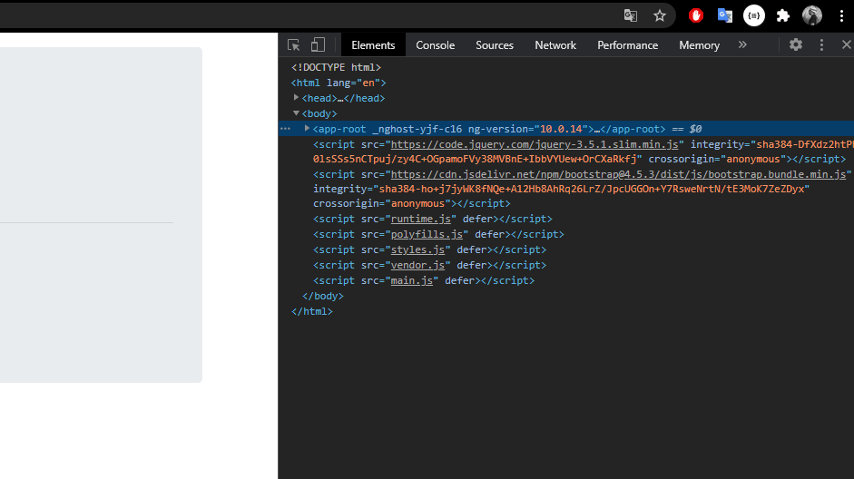
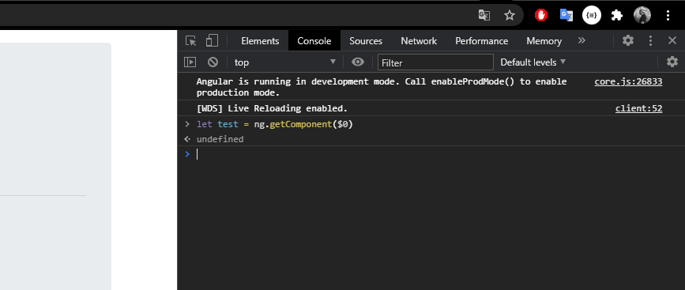

<div class="container mt-3">
    <div class="jumbotron">
        <h1 class="display-4">XIMDEX Backend Test</h1>
        <p class="lead">Realizado por Martín Bernal.</p>
        <hr class="my-4">
        <a (click)="getProfit(csv1, json1)" class="btn btn-primary btn-lg ml-2 mr-2" href="#" role="button">Ejemplo 1</a>
        <a (click)="getProfit(csv2, json2)" class="btn btn-primary btn-lg ml-2 mr-2" href="#" role="button">Ejemplo 2</a>
        <div class="mt-2 mb-2">
            <div class="text-center">
                <p>Para obtener el resultado llemando el metodo desde la consola de Chorme seguir los siguientes pasos:</p>
                
                <p>Seleccionar la etiqueta "app-root" con el inspector de codigo</p>
                
                <p>En la consola teclear : let test = ng.getComponent($0);</p>
                <p>Para obtener los resultados del ejemplo 1 llamar al metodo tecleando: "test.getProfit(test.csv1,test.json1)"</p>
                <p>Para obtener los resultados del ejemplo 2 llamar al metodo tecleando: "test.getProfit(test.csv2,test.json2)"</p>
            </div>
        </div>
    </div>
</div>